The box so far
everything this week is new · schemdraw IEEE
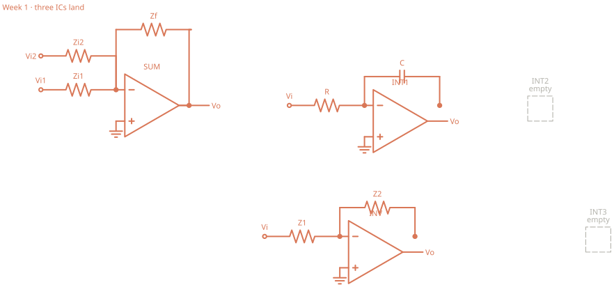
Build all three. Measure each Vo/Vi. Do not patch an ODE yet.

Visual guide · schemdraw IEEE
Same week-by-week machine as the hand SVG page. Symbols and pin attachments come from schemdraw. Existing pages were not overwritten.
Start. Three ICs. Two empty sockets.
everything this week is new · schemdraw IEEE

Build all three. Measure each Vo/Vi. Do not patch an ODE yet.
Week 1 + one patch.
coral = the patch · schemdraw IEEE
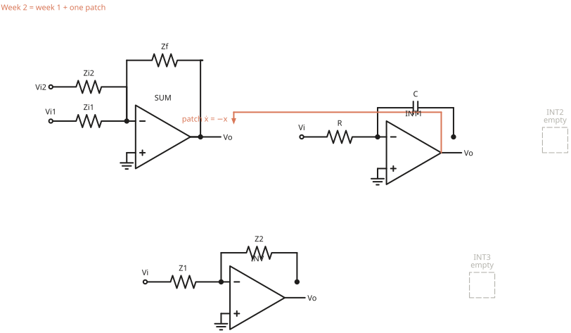
Same three ICs. Time constant must be RC once |L| is large.
Week 2 + default Cc. Patch unchanged.
coral = Cc · schemdraw IEEE
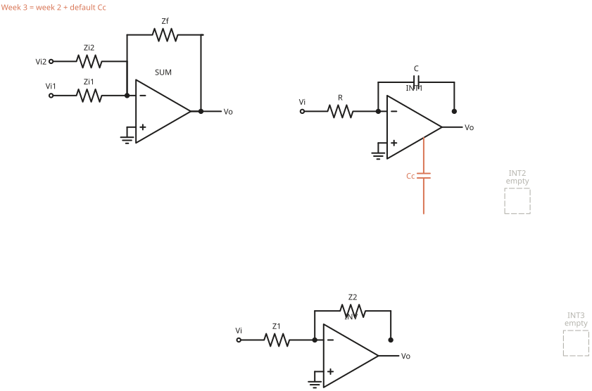
Step and ramp the same ẋ = −x patch.
Week 3 + INT2 in the reserved socket + a new patch.
coral = INT2 and the new loop · schemdraw IEEE
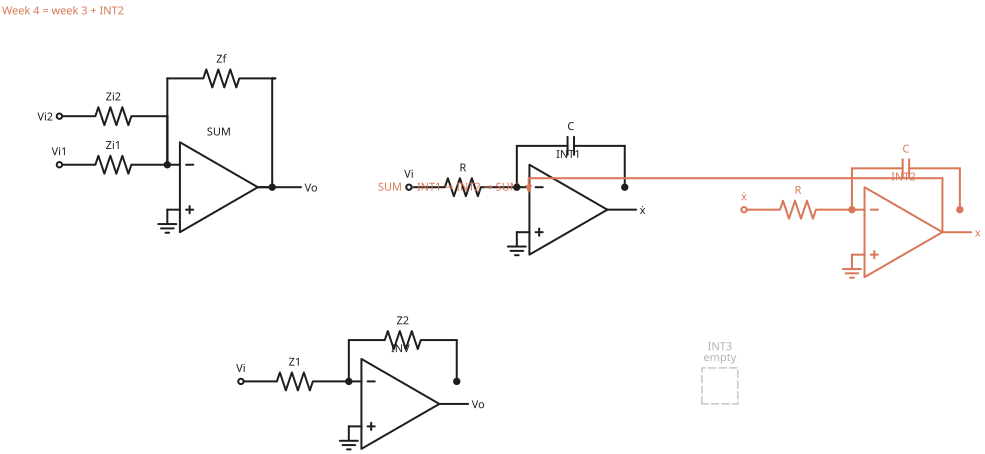
The computer can ring. Measure L of the patched loop.
Week 4 + Figure 5.3. Not connected to the computer.
coral = the regulator · schemdraw IEEE
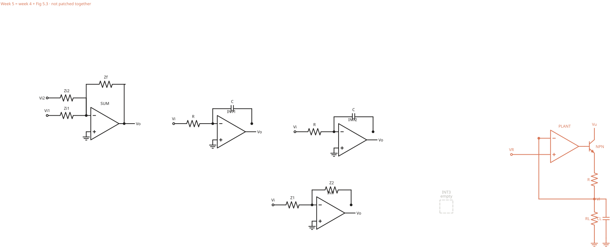
Two systems, one chassis. Do not patch them together yet.
§5.2.2 · schemdraw IEEE
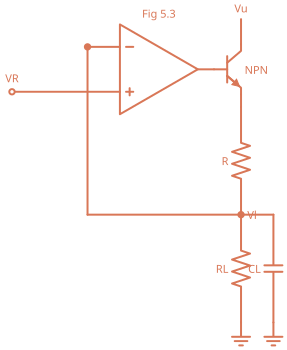
VR to +. Vl sensed to −. Series pass, load RL || CL.
Week 5 + Schmitt + INT3.
coral = oscillator · schemdraw IEEE
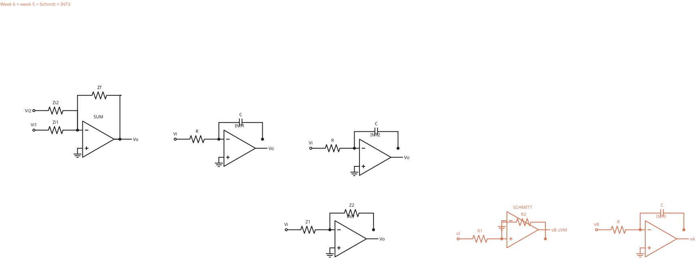
Computer and plant stay. The oscillator is the signal source.
positive feedback to + · schemdraw IEEE
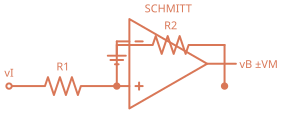
Thresholds ±(R1/R2)VM. − is grounded.
Week 6, except INT1’s IC is gone. Pair + C only.
coral = INT1 socket after the IC comes out · schemdraw IEEE
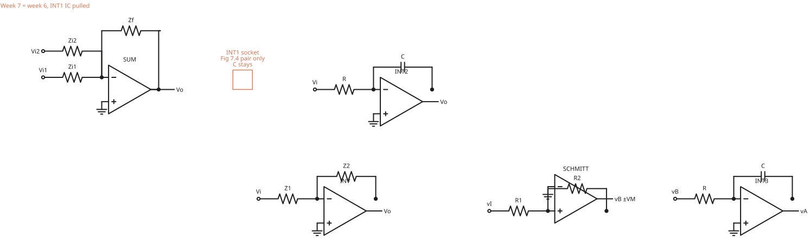
SUM, INT2, INV, plant, oscillator still run on ICs.
Figure 7.4 · schemdraw IEEE
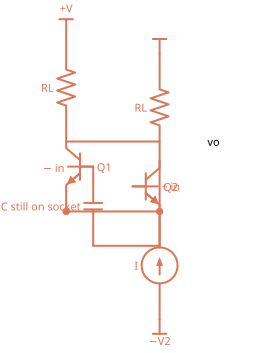
No second stage yet. C stays.
pot across the collector loads · schemdraw IEEE
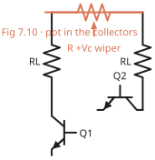
Short the bases, null vo, remove the short.
Week 7 pair + Figure 8.8 + 8.13 + 8.27.
coral = stages added behind last week’s pair · schemdraw IEEE
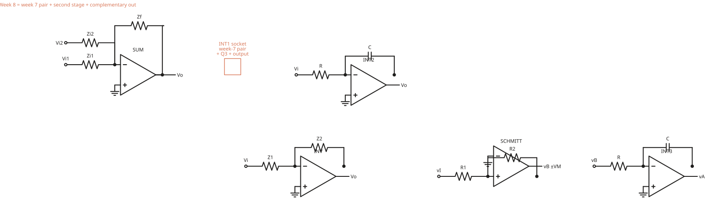
INT1 is a complete discrete op-amp again.
week 7 pair + new stages · schemdraw IEEE
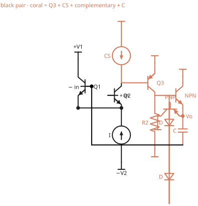
Same Q1/Q2. Q3, CS load, complementary pair, and C are new.
Week 8 amplifier + Cc. Then C goes back.
coral = Cc on last week’s amp · schemdraw IEEE
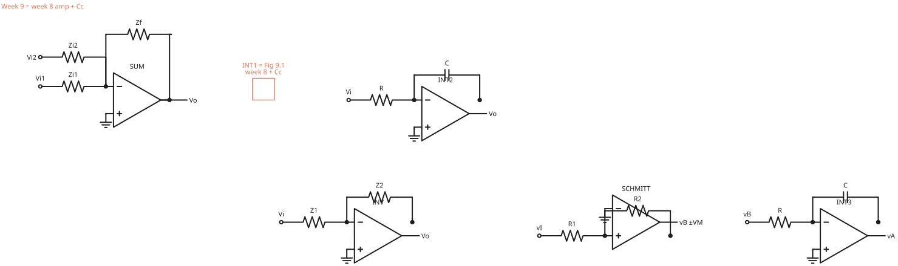
Repeat the week-2 ẋ = −x step through this amp.
Figure 9.1 · schemdraw IEEE
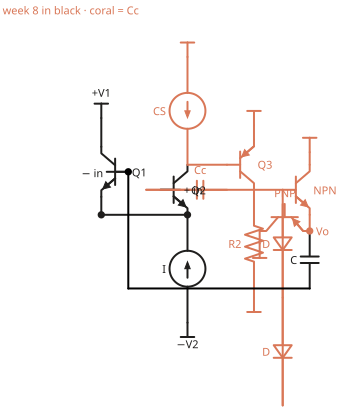
This is last week’s circuit. The only new component is Cc.
C lifted, resistive feedback · schemdraw IEEE
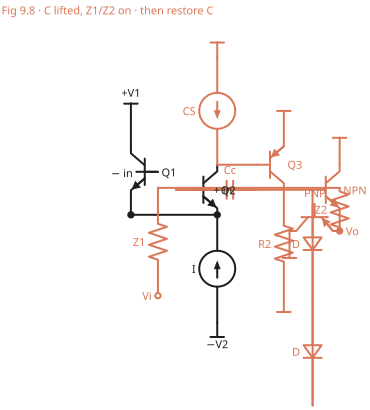
Do not leave it as an inverter. The computer needs C back.
Week 9 Figure 9.1 + Figure 10.9.
coral = repeater on INT1 · schemdraw IEEE
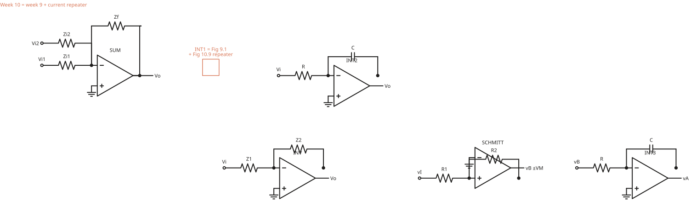
INT2 is still an IC. Hold-time ratio is IB.
Figure 10.9 · schemdraw IEEE
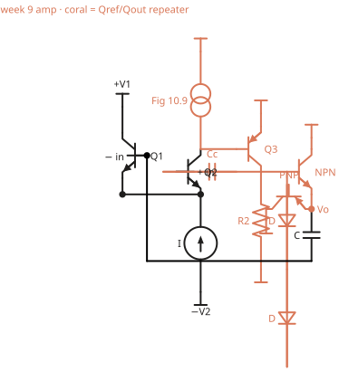
Same Q1–Q3. The first-stage load is now a current repeater.
Week 10 + Figure 12.17 switches.
coral = mode switches · schemdraw IEEE
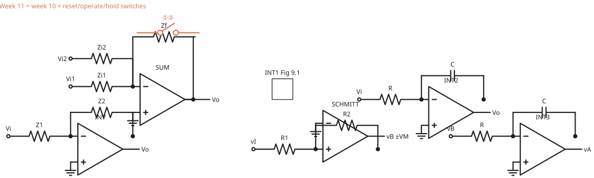
The discrete amp does not move. You wrap switches around C.
switches in coral · schemdraw IEEE
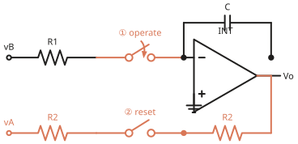
Operate: ① closed, ② open. Reset: ① open, ② closed. Hold: both open.
precision rectifier · schemdraw IEEE
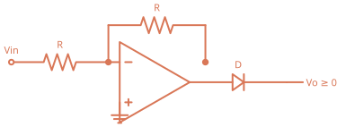
Needed later if you add Wien amplitude control.
Week 11 hardware, new patches.
coral = analog twin of the regulator · schemdraw IEEE
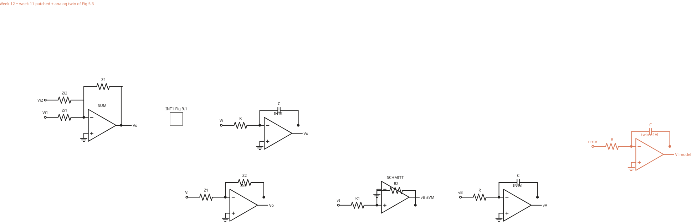
This is the finished function. Week 13 only makes it faster and quieter.
same five blocks, one feedback · schemdraw IEEE
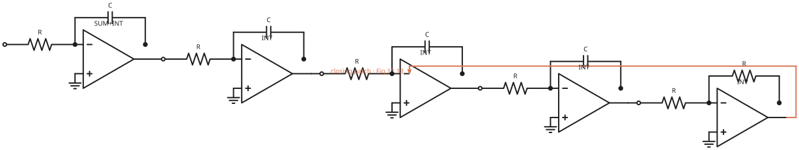
Coral is only the closing patch.
Week 12 + two recipes.
coral = compensation parts · schemdraw IEEE
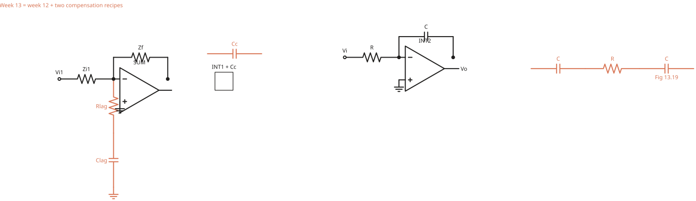
Raise time-scale α until it breaks. Fix L. Raise it again.